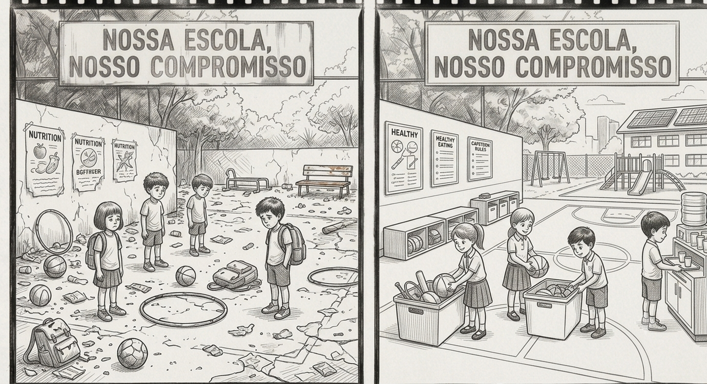

NOSSA ESCOLA NOSSO COMPROMISSO
O QUE NÓS PODEMOS FAZER PARA TORNAR NOSSA ESCOLA AINDA MELHOR?

O cuidade com o patrimônio da escola é responsabilidade
de todos os estudantes e funcionários, os bens duráveis são importantes para o desenvolvimento
dos estudantes e gera um ambiente melhor para todos os envolvidos.